1 はじめに
言語を選ぶ
最初の画面で、日本語 か English を選びます。押すと、すぐにアプリ全体がその言語になります。
あとからでも、ようこそ・サインインの画面の地球のマークのリンクや、設定 ▸ 表示 ▸ 言語 で変えられます。
サインイン
本とメモをアカウントに保存して、機種変更しても引き継げるように、Ocren はアカウントを使います。ようこそ画面の はじめる のあと、次のどちらかを選びます。
- Appleでサインイン
- Google で続行（ブラウザでサインインして、アプリに戻ります）
毎回同じ方法でサインインしてください。Apple と Google は別のアカウントになります。Apple の「メールを非公開」を選んだ場合、設定にはメールアドレスの代わりに「Apple」と表示されます。
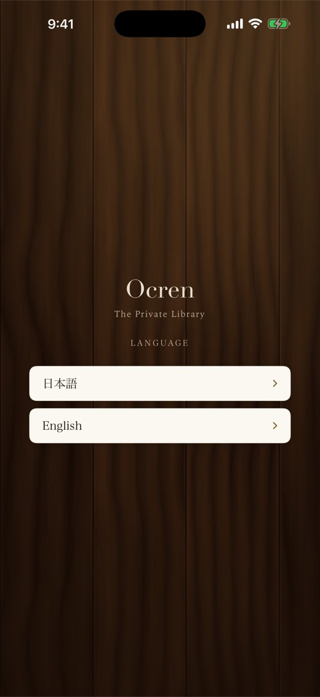
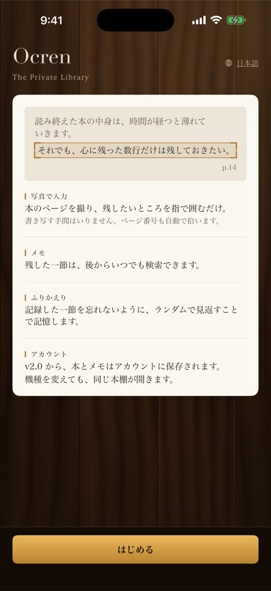
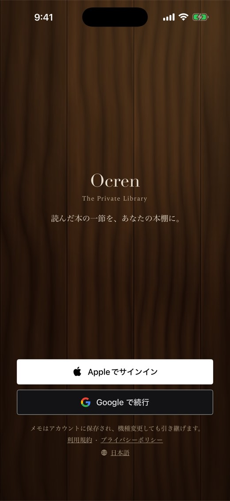
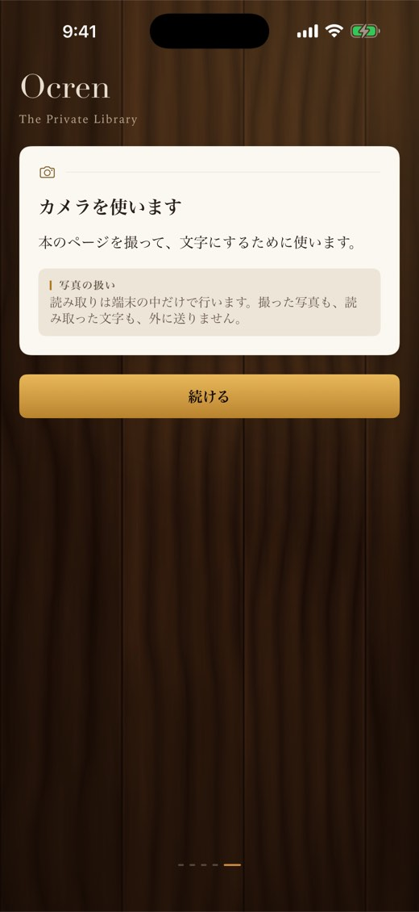
はじめの案内とカメラの許可
はじめてサインインすると、本を追加・写真で入力・メモ・ふりかえり を紹介する 4 枚のカードが出ます。次へ で進み、スキップ で終えられます。スキップした場合は、本の画面で初めて 書き留める を押した時に、iOS がカメラの許可を確かめます。最後の カメラを使います の頁には、読み取りは端末の中だけで行うことが書いてあります。続ける を押すと、iOS がカメラの使用の許可を確かめます。どちらを選んでも先へ進み、あとから iOS の設定で変えられます。
バージョン 1 をお使いだった方へ
Ocren 1.x をお使いだった場合、バージョン 2 を初めて起動した時に、以前の本とメモを一度だけ取り込み、新しいアカウントに保存します。
2 本棚
本棚 のタブは、あなたの木の本棚です。棚に表紙が並びます。表紙の画像がない本は、書名と著者を刷った布の表紙になります。
読書の状態は表紙の印で
表紙には状態の印が付きます。形が違うので、色だけに頼らずに見分けられます。
- 読書中：表紙の上から下がる琥珀色の栞のリボン
- 読了：右下の ✓ の丸い印
- 読みたい：表紙の上からのぞく小さな付箋
絞り込み・並べ替え・検索
- ロゴの下の すべて・読書中・読了・読みたい で棚を絞り込めます。それぞれに印が付いているので、印の見本にもなります。
- 矢印のボタンで、日付順（追加した新しい順）と タイトル順 を切り替えます。
- 一覧のボタンでレコード表示（番号付きのカードに書名・著者・状態・メモの数）に、格子のボタンで棚の表示に戻ります。
- 右上の虫めがねで タイトル・著者で検索 が開きます。× で閉じます。

ヒント：いま開いているタブをもう一度押すと、そのタブの最初の画面に戻ります。
3 本を追加する
本棚の右下の琥珀色の ＋（本を追加）を押して、3 つの方法から選びます。
タイトルで検索
タイトル・著者で検索 に書名か著者名を入れて、改行キーで検索します。結果を押すと、表紙つきで本棚に入ります。通信が必要です。検索サービスにつながらない時は 検索できませんでした と もう一度試す が出ます。
バーコードでスキャン
本の裏の ISBN バーコードにカメラを向けると、自動で読み取って探し（検索中…）、表紙があれば表紙つきで追加します。見つからない時は「この ISBN の本が見つかりませんでした」と出ます。別のバーコードを読む時は、閉じる を押して バーコードでスキャン を開き直してください。通信と、ライブテキストのスキャンに対応した端末が必要です。対応していない端末では この端末ではスキャンできません と出ます。
手動で追加
タイトル（必須）と 著者 を入れ、ステータス を選び、必要なら ノート（任意） に本についてのメモを書いて 保存。表紙はあとから 表紙を選ぶ で付けられます。
最初の状態：検索やバーコードで追加した本は 読みたい、手動で追加した本は 読書中 で始まります。本の画面でいつでも変えられます。
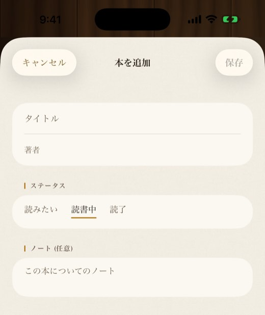
4 本の画面
本棚の本を押すと、その本の画面が開きます。
- 状態：書名の下の札に 読書中・読了・読みたい が出ます。押すと変えられます。
- その下に、メモの数と 開始（本を追加した日）。
- 読了 にすると、読み終えた日が記録されます。ふりかえりとランキングはこの日で数えます。
- 右上の ⋯（その他）：本を編集、表紙を選ぶ（書名と著者で表紙を探します。通信が必要）、本を削除（本とそのメモをすべて削除）。
- メモ の欄：書き留める のボタン、この本の中を検索（メモの本文とノートを検索）、この本で使っているフラグだけの札。もう一度押すと絞り込みを外します。

5 写真からメモを残す
Ocren の中心となる操作です。ページを撮って、残したい行を囲み、メモとして保存します。
1. カメラを開く
本の画面で 書き留める を押すと、すぐにカメラが開きます。
- 右上の 無音：動画の 1 コマを使うので、シャッター音が鳴りません。
- シャッターの横の 写真：写真ライブラリから画像（電子書籍のスクリーンショットなど）を選びます。
- 手入力：空のメモの入力を開いて、手で書きます。
- 閉じる：カメラを閉じます。

2. 残したい行を囲む
写真で入力 の画面で、残したい行を指でなぞって四角く囲みます。何も選ばなければページ全体を読みます（範囲をドラッグで選択（無選択なら全体））。撮り直す でカメラに戻ります（写真ライブラリから選んだ時は、写真を選び直します）。
3. 読み取る
読み取る を押すと、端末の中で文字にします。うまく読めると、文字が入った状態でメモの入力が開きます。ページに印刷されたページ番号も拾います。

4. 自信がない時
読めたものの自信がない時は 読み取り結果の確認 が出ます。読み取った結果を捨てることはありません。次から選べます。
- 高精度でもう一度：解像度を上げて読み直します（少し時間がかかります）。
- 範囲を選び直す
- 撮り直す
- この結果を編集する：この結果を使って、自分で直します。
「見開きのようです。1 ページずつ撮ると精度が上がります」「ルビやページの飾りらしい部分を本文から外しました」のように、理由が出ることもあります。
文字がまったく見つからない時は 読み取れませんでした と出ます。範囲を選び直すか、明るい場所で撮り直してください。
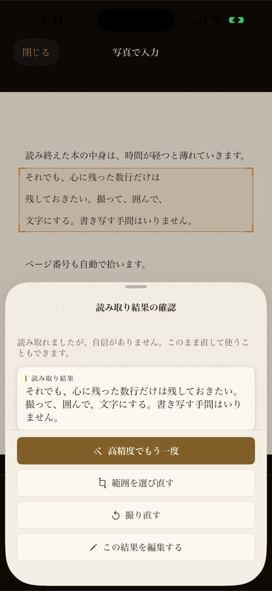
5. 確かめて保存
| 欄 | 内容 |
|---|---|
| 引用した一文 | 読み取った文。必須です。Ocren が勝手に直すことはありません。直したい時は自分で直せます。 |
| ノート（任意） | 感想や考え。 |
| ページ（任意） | 写真からページ番号が見つかると、自動で入ります。 |
| フラグ | なし（✕）か、7 色のどれか。フラグとノートを参照。 |
保存 を押すと本の画面に戻ります。カメラから開いたメモの入力では、何か変えたあとに キャンセル を押すと、このメモを破棄しますか？ と確かめます（破棄 ／ 編集を続ける）。2 枚以上の写真から作ったメモでは、いつも確かめます。
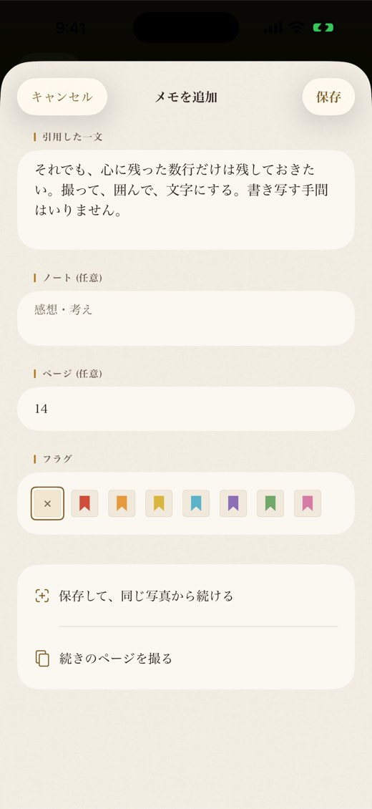
うまく読み取るには
- 1 ページずつ、明るい場所で撮る。
- 残したい一節だけを囲む。
- 日本語の縦書き・横書きに対応しています。
6 1 枚の写真から複数のメモ
- メモの入力で 保存して、同じ写真から続ける を押します。メモが保存され、同じ写真に戻ります。
- 保存した範囲には点線の枠と ✓ が付き、案内が 続けて、別の範囲を囲んでください（無選択なら全体） に変わります。
- 次の範囲を囲んで 読み取る。次のメモには、この写真の 1 件目と同じページ番号が入ります。
- 終わったら 閉じる。

7 ページをまたぐ一節
一節が次のページに続く時は、1 つのメモにまとめられます。
- 範囲を選ぶ画面で、このページの残したい行を囲んでから 次のページに続く を押します。囲んだ範囲を先に読み取り、次のページのカメラを開きます。またはメモの入力で 続きのページを撮る を押します（書いた文はそのまま残ります）。このページの読み取りに自信がない時は、読み取り結果の確認 の最後のボタンが この結果で続ける になります。
- 次のページを撮るカメラが開きます。右下に「2枚目」と出ます。画像から選ぶ時は 写真 も使えます。
- 続きの範囲を囲んで（「2枚目：続きの範囲を囲んでください」）、読み取る。
- 読み取った文が 引用した一文 の最後につながります（余計な改行は入りません）。入力には「2枚の写真から」と「2枚目の文を足しました」、元に戻す が出ます。元に戻す で最後に足したページを外せます。
- さらに続く時は繰り返し、最後に 保存。1 つのメモとして保存されます。
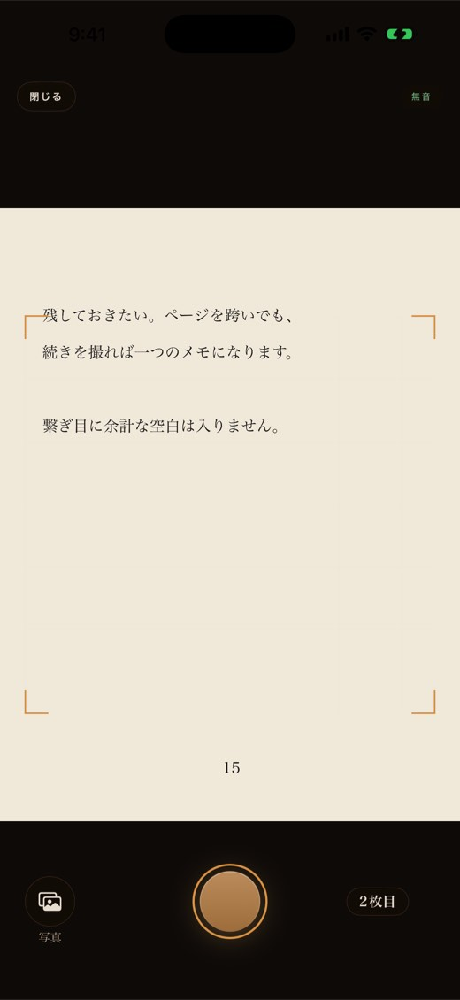
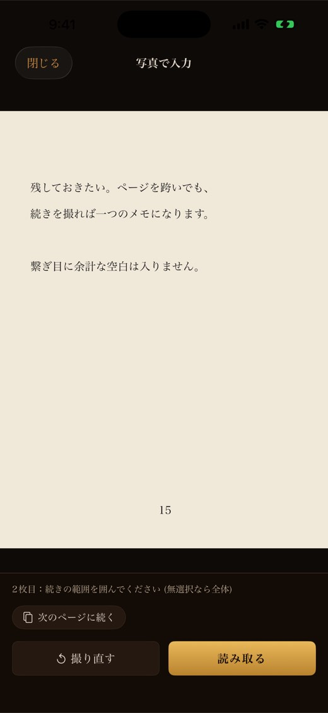

知っておくと便利：ページ番号は 1 枚目の写真から拾います。カメラに戻っても、ノート・ページ・フラグはそのまま残ります。次のページのカメラで 閉じる を押すと、何も失わずにメモの入力に戻ります。
8 カメラを使わずに
- 手で書く：カメラの 手入力 を押すか、本の画面で 書き留める を長押しして 手動で入力 を選びます。
- 保存済みの画像を使う：カメラの 写真 を押します。
カメラが使えない時
カメラの使用が許可されていないと、カメラが許可されていません と出て、写真ライブラリから選ぶ と 手動で入力 が選べます。カメラは設定アプリで許可できます を押すと iOS の設定が開き、許可して戻るとカメラが使えるようになります。
ほかに カメラの使用が制限されています（スクリーンタイムなど）、カメラを起動できませんでした、この端末ではカメラを使えません と出ることがあります。どの場合も、写真と手入力は使えます。
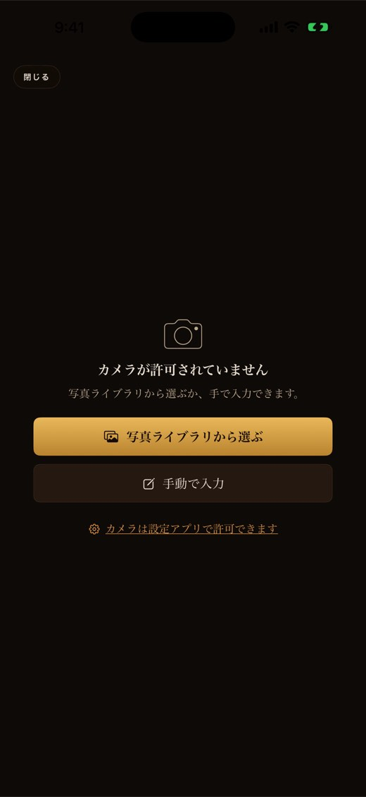
9 書きかけのメモ
メモを書いている途中でほかのアプリに移り、そのあと iOS がアプリを閉じても、書いた文はこの端末に残ります。次にその本で 書き留める を押すと（長押しして 手動で入力 を選んだ時も）、書きかけのメモがあります と出ます。
- 続きを書く：書いた文が入った状態で入力を開きます。
- 破棄して新しく書く：書きかけを消して、始めた時と同じ方法でやり直します（カメラ、または 手動で入力 から始めた時は空の入力）。
- キャンセル：何もしません。書きかけは残ります。
残るのは文字（引用した一文・ノート・ページ・フラグ）だけで、写真は残りません。書きかけは本ごとに 1 つ、この端末の中だけです。
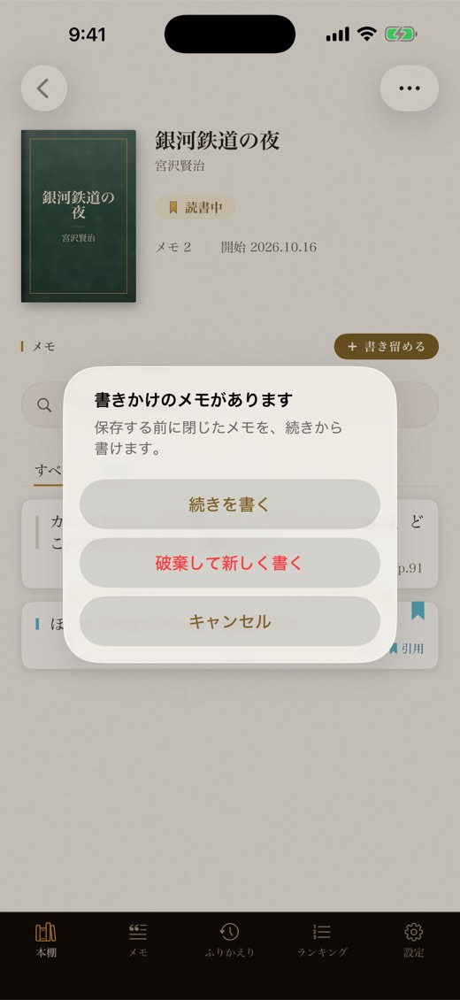
10 フラグとノート
メモには、感想を書く ノート と、7 色のフラグの 1 つを付けられます。最初の名前は次のとおりです。
| 色 | 最初の名前 |
|---|---|
| 赤 | 重要 |
| 橙 | あとで |
| 黄 | 気づき |
| 水色 | 引用 |
| 紫 | 疑問 |
| 緑 | 共感 |
| 桃 | お気に入り |
名前は 設定 ▸ フラグの名前 で変えられます。欄を空にすると最初の名前に戻ります。フラグの名前はこの端末にだけ保存されます。
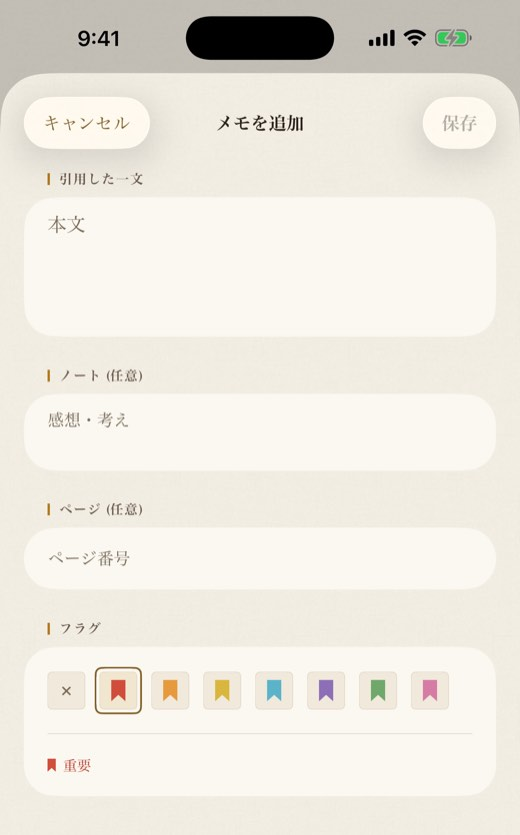
11 メモのタブ
メモ のタブには、すべての本のメモが集まります。
- 検索：メモの本文・ノート・書名から、入力するそばから探します。
- フラグの札：すべて と、使っているフラグ。もう一度押すと外れます。
- 件数の行に、当てはまるメモの数が出ます。
- 並べ替えのボタンで 新しい順 と 本ごと を切り替えます。
- メモを押すと、メモの画面が開きます。

13 ふりかえりと毎日のリマインド
- 今日の一文：タブを開くたびに、残したメモからランダムに 1 つを出します。メモが 2 件以上あれば 別の一文 で引き直せます。押すとメモが開きます。
- 読書の記録：累計・今年・今月・今週（週は月曜始まり）から選びます。
- 読了：その期間に読了にした本の数
- メモ：その期間に保存したメモの数
- 読み始めた本：その期間に追加した本の数（状態は問いません）
- メモの推移：棒グラフ。今年は 12 か月、今月は 7 日ごと、今週は 1 日ごとです。

毎日のリマインド
設定 ▸ 今日の一文 で 毎日リマインド をオンにし（はじめての時は iOS が通知の許可を確かめます）、時刻 を選びます（最初は 8:00）。すると、この先 14 日分、毎日その時刻に、残したメモの 1 つが書名と一緒に通知で届くよう予約します。通知は、その時にあるメモから端末の中で作ります。
リマインドは 14 日分ずつ予約されます。続けて受け取るには、またあとで追加したメモも含めるには、毎日リマインド を一度オフにしてオンに戻すか、時刻 を変えてください。メモを保存する前にオンにした場合は、メモを 1 件保存してからオフ・オンしてください。それでも届かない時は、iOS の 設定 ▸ 通知 ▸ Ocren を確かめてください。
14 ランキング
みんなの本棚とメモから集計したランキングです。それぞれ最大 50 冊まで出ます。
| タブ | 数えるもの |
|---|---|
| 人気 | 本棚に登録している人の数 |
| メモ | 残されたメモの数 |
| 今月の読了 | 今月、読了にした人の数 |
| 読みたい | 「読みたい」にしている人の数 |
下に引っぱると更新します。通信が必要です。表示するのは書名・著者・表紙と数だけで、誰が登録したかやメモの本文は表示しません。

15 設定とアカウント
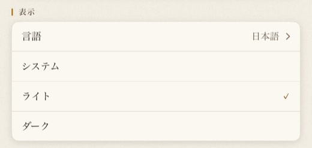
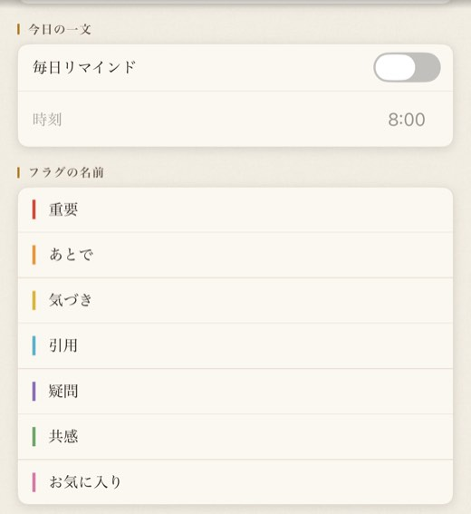
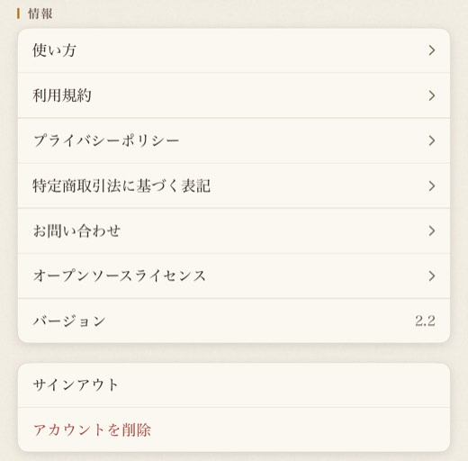
アカウント
- ログイン中：メールアドレス（「メールを非公開」の場合は Apple）。
- 同期：最後に同期した時刻、同期中…、未同期、失敗（タップで再試行）。失敗した時は理由が出ます。行を押すと再試行します。
- サインインの状態が切れています と出たら、サインインし直す を押します。サインアウトしますか？ と出るので サインアウト を押し、前と同じ方法（同じ Apple か Google のアカウント）でサインインしてください。
サブスクリプション
広告を削除（月額）・広告を削除（年額）、購入を復元（バージョン 1 の買い切りの「広告を削除」も戻ります）、購読後は サブスクリプションを管理。広告と「広告を削除」も参照。
表示
言語：日本語 か English。言語の下で システム・ライト・ダーク を選びます。変わるのは紙の画面です。木の本棚・タブバー・カメラは常に暗い色です。
今日の一文・フラグの名前
情報
使い方（このページ）、利用規約、プライバシーポリシー、特定商取引法に基づく表記、お問い合わせ（メールが開きます）、オープンソースライセンス（文字の読み取りに使っているソフトウェアと、その利用条件）、バージョン。
サインアウト
サインアウト を押すと サインアウトしますか？ と確かめます。この端末の本とメモは、次に同じアカウントでサインインすると戻ります。まだアカウントに保存できていない変更がある時はそう表示されるので、オンラインに戻して同期してからがおすすめです。
アカウントを削除
アカウントを削除 ▸ 削除する。アカウントと、クラウド上のすべての本・メモが削除され、元に戻せません。この iPhone の中にある本とメモは、これでは消えません。端末からも消したい時は、アプリを削除してください。
アカウントが変わった時
この端末の本とは別のアカウントでサインインすると、同期を止めて、どうするかを確かめます。
- 今のアカウントに引き継ぐ
- 消して、このアカウントの内容にする（端末のデータは残りません。消す前にもう一度確かめます）
- サインアウトして、別のアカウントで入り直す
引き継がない限り、本は前のアカウントに残ったままです。同じ人が Apple と Google の両方でサインインした時によく起こります。
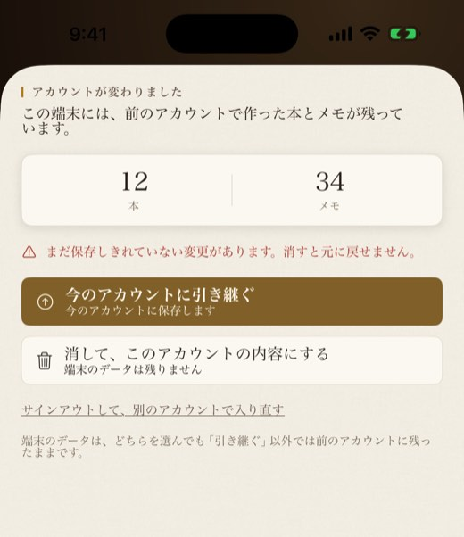
16 広告と「広告を削除」
Ocren は無料で、広告が出ます。タブバーのすぐ上のバナーと、本を追加したあとやメモを書き終えたあとなどの区切りで、ときどき全画面の広告が出ます。アプリに戻った時に出ることもあります。カメラの上には出ません。広告は Google AdMob が配信します。オフラインの時など Google の広告を読み込めない時は、Ocren 自身のお知らせ（「広告を消して読む」など）を出すことがあります。Ocren はトラッキングの許可を求めません。
設定 ▸ サブスクリプション の 広告を削除（月額） か 広告を削除（年額） で、バナーと全画面の広告がすべて消えます。購読は、現在の期間が終わる 24 時間以上前に解約しない限り自動で更新されます。解約は サブスクリプションを管理 か App Store の設定から、いつでもできます。
17 プライバシーとオフライン
- 読み取りは端末の中だけ。文字を読み取るモデルはアプリの中にあります。撮った写真も、読み取った文字も、外に送りません。写真は作業中にメモリに置くだけで保存せず、保存か閉じた時に手放します。
- 通信なしで使えるもの：撮影・読み取り・メモの保存・編集・検索、本棚、ふりかえり、毎日のリマインド、引用カード。
- 通信が必要なもの：サインイン、同期、本の検索、バーコードの照会、表紙を選ぶ、ランキング、購入、このガイドなどの Web ページ。
- 同期：オフラインで変えた内容は、通信が戻ると自動でアカウントに送ります。
- アカウントに保存するもの：本（書名・著者・表紙の画像のアドレス・ノート・状態・読了日）とメモ（本文・ページ・ノート・フラグ・日時）。
- この端末だけに残るもの：フラグの名前、書きかけのメモ、写真から作ったメモの読み取ったままの文字、言語・外観・リマインドの設定。
くわしくはプライバシーポリシーをご覧ください。
18 よくある質問・困ったとき
写真や読み取った文字は送信されますか？
いいえ。文字の読み取りは端末の中だけで行います。写真は作業中にメモリに置くだけで、保存しません。メモとして保存した文は、機種変更しても引き継げるようアカウントに保存されます。
機内モードでも使えますか？
はい。撮影・読み取り・メモの保存・編集・検索はオフラインで使えます。変更は通信が戻ると同期します。サインイン、本の検索、バーコードの照会、表紙を選ぶ、ランキング、購入には通信が必要です。
「カメラが許可されていません」と出る
カメラは設定アプリで許可できます を押すか、iOS の 設定 ▸ Ocren でカメラをオンにしてください。それまでも 写真 や 手入力 で書けます。
カメラを使わずにメモを書きたい
本の画面で 書き留める を長押しして 手動で入力 を選びます。カメラの 手入力 でも書けます。
電子書籍のスクリーンショットは使えますか？
はい。カメラの 写真 から選べます。
うまく読み取れない
1 ページずつ明るい場所で撮り、残したいところだけを囲んでください。自信がない時は 高精度でもう一度・範囲を選び直す・撮り直す、または この結果を編集する を選べます。読み取った文は自動で直さないので、保存の前に自分で直せます。日本語の縦書き・横書きに対応しています。
ページ番号が入らない・違う
ページ（任意） に入力してください。自動で拾うのは 1 枚目の写真だけです。
バーコードで本が見つからない
タイトルで検索 か 手動で追加 をお使いください。別のバーコードを読む時は、スキャンの画面を一度閉じて開き直してください。
検索やバーコードで追加した本が「読みたい」になる
最初の状態です。本の画面の状態の札を押すと、読書中 や 読了 に変えられます。
機種変更したら本棚が空になった
前と同じ方法でサインインしてください。Apple と Google は別のアカウントです。いまのアカウントは 設定 ▸ アカウント ▸ ログイン中 で確かめられます。
同期が「失敗（タップで再試行）」／「サインインの状態が切れています」
その行を押すと再試行します。切れている時は サインインし直す を押して サインアウト し、前と同じ Apple か Google のアカウントでサインインしてください。
購入を復元したい・解約したい
設定 ▸ サブスクリプション ▸ 購入を復元（購入した時と同じ Apple ID で）。解約は サブスクリプションを管理 か App Store の設定から。
毎日のリマインドが届かない
リマインドは 14 日分ずつ予約されます。毎日リマインド がオンか、iOS の設定で Ocren の通知が許可されているかを確かめてから、毎日リマインド を一度オフにしてオンに戻してください。この先 14 日分を予約し直し、あとで追加したメモも含めます。メモを保存する前にオンにした場合は、メモを 1 件保存してから行ってください。
ランキングで自分の本が知られますか？
ランキングに出るのは書名・著者・表紙と数だけです。誰が登録したかや、メモの本文は表示しません。
アカウントを削除したい
設定 ▸ アカウントを削除 ▸ 削除する。アカウントとサーバー上の本・メモがすべて削除され、元に戻せません。iPhone の中の本とメモも消したい時は、アプリを削除してください。
19 お問い合わせ
ご質問・不具合のご報告・ご要望は、メールでお寄せください。アプリの 設定 ▸ 情報 ▸ お問い合わせ からも送れます。
ocren_support@googlegroups.com